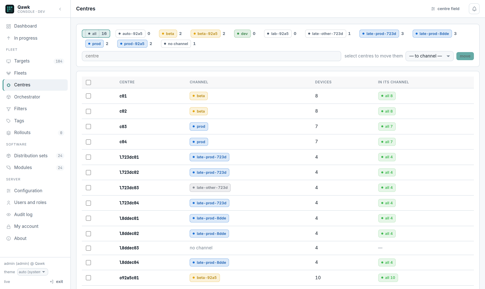

Centres
A centre is where a device physically is: a shop, a site, a bowling centre. You put the centre in a channel, and every device in it follows — the lane computers, the terminals bolted to them, and the machines that stand alone. You move a place, not a list of machines.
Why this exists
Without centres, moving a site from beta to prod means finding its forty machines and moving each one. That fails in three ways, all of them quiet:
- You miss one. It stays on beta's release for months and nobody notices until it behaves differently from the lane next to it.
- A machine is replaced. The new one registers, matches no list, and lands wherever the channel rules put it — which is not necessarily where its neighbours are.
- Someone moves a single device "temporarily" and it never goes back.
A centre fixes all three at once, because the truth about where a machine lives comes from the machine itself, not from a list someone maintains.
How a device says where it is
It reports an attribute. By default attribute.centerid:
PUT /DEFAULT/controller/v1/lane-17/configData
{ "mode": "merge", "data": { "centerid": "c03", "device_type": "device2" } }Every distinct value of that field is a centre. There is no table of centres to create and keep in step — a centre exists because devices say they are in it, and stops existing when none do.
The field is a setting. If your devices report the site somewhere else, or you set it from the console as metadata rather than having the device report it:
curl -u admin:$PW -X PUT -H 'Content-Type: application/json' \
-d '{"field": "metadata.site"}' $Q/qawk/v1/centres/settingsMoving a centre
Console: Centres — every centre, its channel, how many devices it has and how many of them are already there. Tick the centres and press move.

curl -u admin:$PW $Q/qawk/v1/centres
curl -u admin:$PW -X PUT -H 'Content-Type: application/json' \
-d '{"centres": ["c03", "c04"], "fleetId": '$PROD'}' $Q/qawk/v1/centres"fleetId": null does not eject anybody. It means "this centre
is no longer in a channel", and its devices stay where they are — they are
simply no longer pulled anywhere. To move a centre's devices somewhere else, put
the centre in that channel; to leave them unmanaged, set it to
null and move them by hand afterwards.
What happens next
The devices follow a hundred at a time, in separate transactions. A centre of four hundred machines is four short writes rather than one long one — a single transaction over that many rows held their records for minutes on a busy disk, and the devices' own reports queued behind it until they timed out. Small writes cost a few more seconds and cost nobody an outage.
Then, on the next pass of the engine:
- the devices that stand alone are given the new channel's distribution set, in that channel's waves;
- the devices that are part of a system are taken by that channel's orchestrator, with the channel's manifest, in the manifest's order.
A centre that arrives late is still taken. If the channel's release had already finished before you moved the centre in, the orchestrator picks up the new systems and the release reopens while it works through them. You do not have to re-release for a centre that joined afterwards, and you do not have to remember that you moved it.
A device of a centre cannot be moved by hand
If you try to move one device of a centre into a different channel, Qawk refuses:
the devices of centre c03 go with their centre: move the centre (Centres),
or lend the device to a temporary channelThis looks like an obstruction and is the opposite. Without it, the move would be accepted and then silently undone seconds later when the centre pulled the device back — and you would have every reason to believe it had worked. A refusal you can read beats a success you cannot trust.
The two legitimate ways round it are in the message: move the centre, or lend the device to a temporary channel, which it can be sent home from afterwards.
Centres and the orchestrator
A centre is also how the orchestrator paces itself. A channel's orchestrator can work one centre at a time: every system in the first centre, then the next, so a bad manifest is discovered in one site rather than in forty.
And the order the centres are taken in can be chosen rather than alphabetical — put your least critical sites first:
curl -u admin:$PW -X PUT -H 'Content-Type: application/json' \
-d '{"orchestrator": {"byCentre": true, "centres": ["c09", "c03", "c04"], "maxParallel": 4, "maxFailed": 1}}' \
$Q/qawk/v1/fleets/$PRODNaming centres there also limits the orchestrator to them. Leave the list empty and it takes every centre of the channel, by name.
What to watch
| Column | Means | If it looks wrong |
|---|---|---|
| devices | How many report this centre. | Lower than you expect: machines are off, or reporting a different value. Check Targets for that attribute. |
| on channel | How many are already in the centre's channel. | Below devices right after a move: normal, they are following in batches. Still below an hour later: some devices have not called in. |
| channel | Which channel the centre is in. | Empty: the centre is in none, and its devices follow the channel rules instead. |
API
List centres, put centres in a channel, change where devices say their centre.